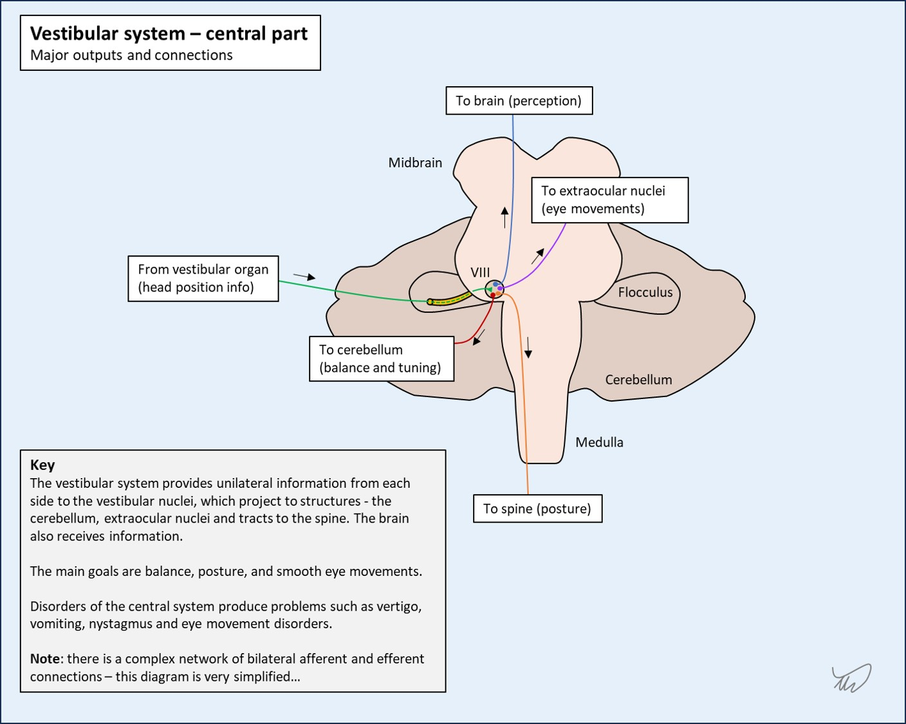
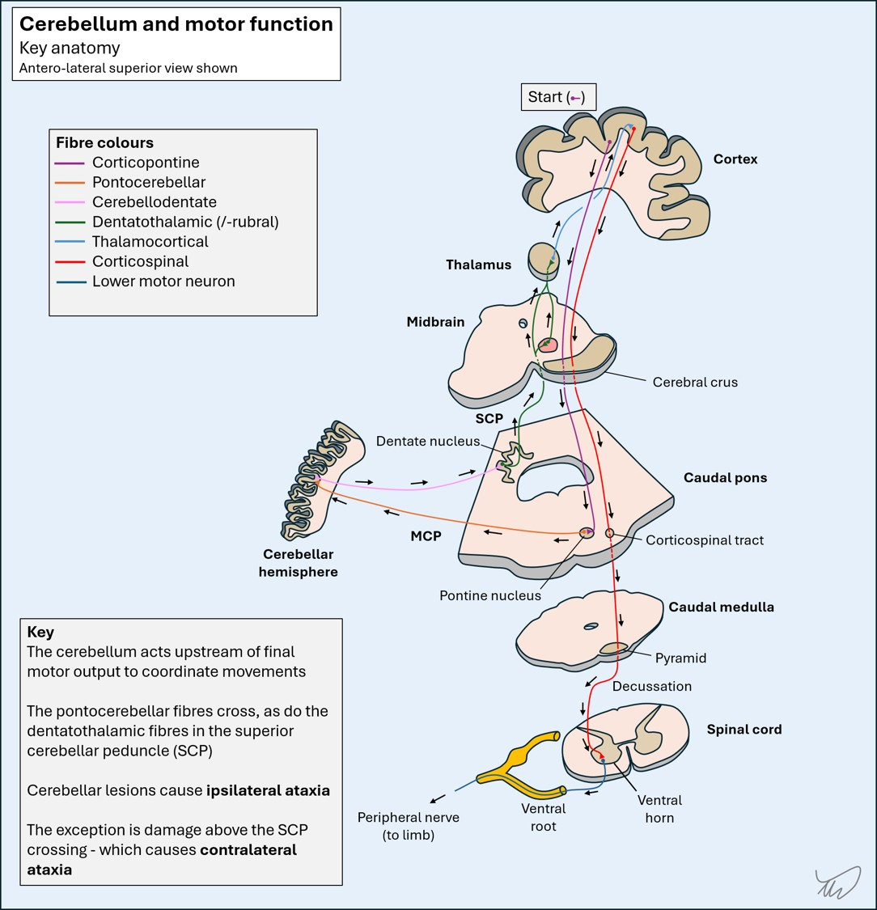

Case 24 - Dizziness and slurred speech
Where is the lesion?
This man had a sudden-onset neurological problem. The symptoms were vertigo, mild unsteadiness – though he was still able to complete a walk home, with two dogs on leads – as well as some right-sided functional impairment with the hand and probably also leg (it felt more unsteady), and dysarthric speech. Most of this died down quickly, but he was left with residual gait impairment - without ongoing vertigo.
We covered vertigo in earlier cases - including a detailed breakdown in Case 5. It doesn't localise very neatly nor lateralise - it can represent pathology in the vestibular system or the brainstem and cerebellum. Central causes of vertigo are potentially life-threatening, so distinguishing between peripheral and central causes is critical.
The peripheral component of the vestibular system is relatively simple - it is lateralised and travels from the vestibular organ in a single nerve (VIII) to the brainstem.
The central component is more complicated, with multiple nuclei and several pathways involved, connecting the vestibular nucleus to the cerebellum, the nuclei involved in eye movements, the spine, and the brain.

While vertigo alone doesn't tell us where the lesion is, other features do. We can look for symptoms and signs that – when present – support a central cause. Their absence is reassuring - as are some of the other signs supporting a vestibular cause of vertigo, such as - if present - the characteristics of nystagmus, or an abnormal head impulse test on one side.
If you don't remember the details of this important topic, go back to Case 5 first.
Vertigo in isolation is nearly always peripheral. 'In isolation' means we need to screen for additional features that shouldn't be seen before we make this conclusion.
Vertigo with any obvious lateralising features is central. Bar signs like an abnormal head impulse test on one side or unidirectional horizontal nystagmus, there shouldn't be anything lateralising in a peripheral cause of vertigo.
There are other non-lateralising features (e.g, speech changes) which are also worth considering. The below are all important things to look for in someone presenting with acute vertigo:
Any of the above would not be expected in a peripheral cause of vertigo and would be an immediate 'red flag' for a central cause.
We covered other aspects of the examination - particularly the HINTS sequence - in Case 5 .
Here, the patient's vertigo had passed so HINTS has no role. Do not use this test in people who do not have ongoing vertigo!
We are instead dealing with a case of transient, completed vertigo. This can often be more challenging, particularly when an attack has entirely resolved, as we rely on the history - bar special provoking manouevres we can attempt on examination such as the Dix-Hallpike test.
Here however there are ongoing residual features, which makes it easier - the episode has not completely resolved. In addition, there were transient features during the initial stages that immediately make it very obviously 'central'.
Firstly, he had unilateral problems in the right arm and leg compared to the left. It’s difficult to say what these were, but they don’t sound like weakness and he didn’t report sensory changes – so they were probably ataxia.
2. Altered gait and balanceGait unsteadiness is less reliable during vertigo attacks, because most people with vertigo of any cause - peripheral or central - will stagger and feel off balance to an extent. If someone truly cannot maintain upright stance that’s generally a 'red flag' for a central cause, so we should always examine whether someone can stand up if we see them during an attack of vertigo. This is easily forgotten, but very important. Here though, the patient was able to stand and continue walking.
However, he did feel his right side was less stable than his left during the peak period, which is notable – peripheral causes should not feature this type of asymmetry. This symptom might have reflected unilateral ataxia, or perhaps weakness.
What's also evident now is that, after the vertigo has subsided, he can't tandem walk. This attack has not fully resolved - it has left an ongoing deficit - gait/truncal ataxia - which goes against a peripheral cause. Anybody who has this after the vertigo subsides is likely to have a central lesion.
3. DysarthriaThe other very clearly central feature here is dysarthria. There are no peripheral causes of vertigo that cause this.
One pitfall however is when people with vertigo speak very feebly and slowly - unsurprisingly given how terrible they feel (they are usually lying with eyes shut and often have been vomiting). Sometimes this is reported as ‘slurring’ by witnesses, who are often terrified the person is having a stroke and may attach significance to a quiet voice. A related, often over-reported feature is a 'possible slight facial droop'. It is always important to clarify what is meant by the witness - we should never simply take terms offered as objective data at face value.
In contrast this man was upright and interactive, but with difficulty articulating speech. This sounds very much like true dysarthria.This is a central lesion, somewhere in the cerebellum, brainstem or both.
Either could produce vertigo with ataxia (including limb) and dysarthria.
We can go further and say the right-sided areas were implicated, because right-sided limb ataxia reflects disease in the right cerebellum or its input/output system, except above the superior cerebellar peduncle decussation in the lower midbrain.

There aren’t any obvious cranial nerve or sensorimotor features – which makes a brainstem lesion less likely. As a contrast, if for example he’d reported diplopia or sensory disturbance this would suggest brainstem involvement.
If this is a cerebellar lesion it also involves the central regions – because now he has gait ataxia, evident on tandem gait (always test this before concluding the neurological examination is normal!). Damage to the vermis or paravermis is associated with this, and in such lesions there is usually little to find in the limbs.
However, he also had some right-sided features so some of the more peripheral hemispheric fibres or the peduncles must have been affected in the initial stages to cause these features - which were no longer evident by the time he was seen in hospital.
As with ataxia, dysarthria doesn’t completely localise to one area, as there are tracts involved in speech articulation entering and leaving the cerebellum, running through the brainstem, so brainstem lesions can also feature dysarthria:However, since we don't think this is in the brainstem - due to the lack of other signs - we might be able to think further about where the lesion would be in the cerebellum. Not all cerebellar lesions feature dysarthia. Rostral paravermal cerebellar lesions are associated with it in studies, particularly on the right, and functional imaging studies suggest this area correspondends to speech; this makes sense, given the motor parts of the cerebellum project to the contralateral hemisphere, and language centres are in the left hemisphere for most people.
So in summary, it sounds like this vertigo, dysarthria and subtle gait ataxia is attributable to a right cerebellar lesion, likely affecting the central and paracentral regions - or perhaps one of the right-sided cerebellar peduncles. It doesn't sound like a brainstem lesion - this isn't impossible, but if it is a brainstem lesion, it has entirely spared other structures we would expect to also be affected.
What is the lesion?